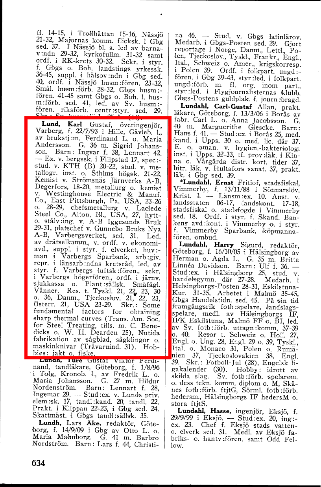
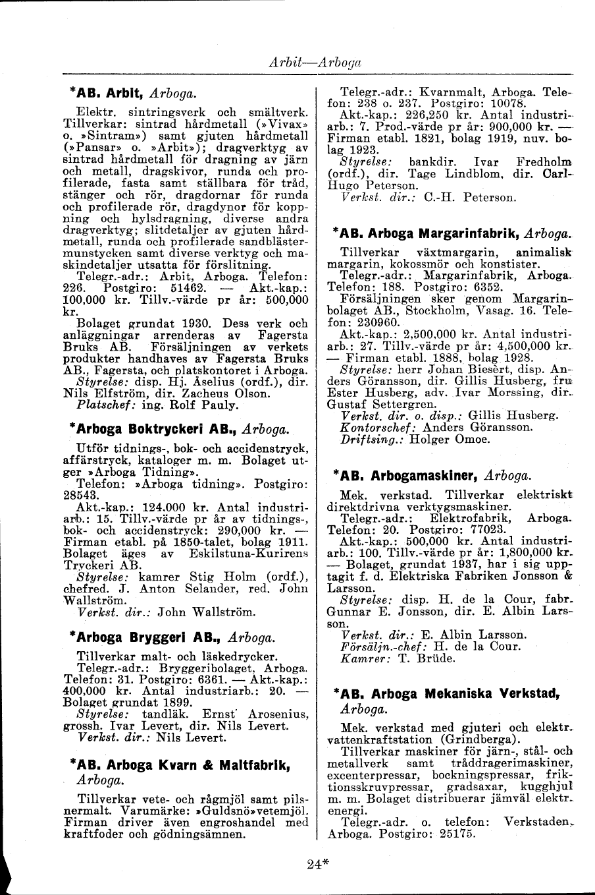
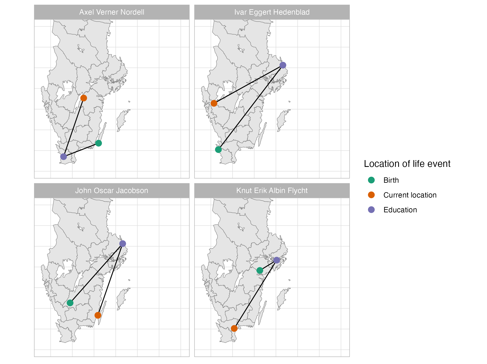

knitr::include_graphics("assets/who-is-who-volumes.png")
In the quest to understand the dynamics of economic development and technological advancement, previous research by this author and his supervisors shed light on the transformative impact of early electricity access in Sweden. “Power for progress: The impact of electricity on individual labor market outcomes” [@jayes_power_2024] revealed how the advent of electricity in certain parishes led to positive economic outcomes: a boost in income levels, reduced inequality, and the maintenance of employment levels despite the advent of labor-saving technology. A particularly striking observation was the tendency of workers in these early electrified parishes to remain in their birthplaces, hinting at a newfound economic vibrancy stemming from the technological spillovers.
Building on these insights, the present paper delves deeper into the human aspect of this technological revolution. It poses a critical question: Who were the key figures driving this change? Were they local talents nurtured by the opportunities at hand, or did they represent a wave of skilled individuals drawn from afar, lured by the pioneering spirit of these early electrified areas?
To answer this, the investigation leverages two novel and rich data sources. The first, “Vem är Vem”, is a comprehensive set of biographical dictionaries containing the profiles of 75,000 notable Swedes active between 1945 and 1968. The second, the “Svensk Industrikalender” or Swedish Industrial Calendar of 1947, offers an exhaustive catalogue of industrial firms, detailing their activities, workforce, and financial metrics.
I digitize and structure these sources in order to analyze the changing patterns of the Swedish labour market in the middle of the 20th century in light of electrification. Our findings challenge our prior expectations. Contrary to the belief that local talent pools predominantly fueled the technological boom, I observe a pattern of geographical mobility among the highly educated and skilled professionals in electricity-related fields. These individuals, pivotal to overseeing and advancing the electricity sector, often sought education and opportunities far from their origins. This suggests a bifurcated labor market: local talent predominantly filled the burgeoning middle-skilled roles within the electricity sector, while the top-tier skilled professionals were more transient, moving towards educational and occupational opportunities. This paper explores the implications of this labor market structure for the economic development patterns witnessed during Sweden’s second Industrial Revolution.
These findings, tentative as they are, have real world value. As we seek to understand what drove the dynamism during the age of electrification in Sweden, we are better equipped to shape policy today that seeks to revitalize deindustrializing areas across the developed world and help the developing world harness new technologies for sustainable growth. In addition, the methodologies employed to structure and analyze archival data can provide a template for future research using similar materials. [fix up]
The paper is laid out as follows: the current research question is placed in context, the sources are explained, followed by their digitization and structuring process. I then lay out some descriptive statistics and tentative findings regarding the patterns of movement for the high skilled electricity related workers, compared with other professionals I observe in the biographical dictionaries.
“Vem är Vem?” is a biographical dictionary, comprising a rich repository of information about notable individuals in Sweden. Published in two regional editions with a total of five volumes each, the first edition spanned from 1945 to 1950, and the second from 1962 to 1968, by the Bokförlaget Vem är Vem publishing house. An additional volume specifically focussed on individuals in industry and business was produced in 1945. This encyclopedia offers an invaluable snapshot of Swedish societal and professional landscapes during these pivotal periods. [fix citation]
The primary intention behind the creation of “Vem är Vem?” was to spotlight individuals who were at the peak of their careers, regardless of their age. This focus extends beyond traditional measures of influence, emphasizing the importance of those in influential positions or notable roles across relatively diverse sectors. As such, it serves as a crucial resource for understanding the professional and personal trajectories of around 75,000 individuals who shaped Swedish society in the mid-20th century.
It is worth noting that the criteria for inclusion was somewhat vague, and individuals could opt in to being included for a nominal fee. As a result, there are some individuals for whom not much information is included beyond biographic information, current location and profession. For others, there is a rich tapestry about their lives including records of career progression, business travel, technical writings and membership of civic organizations. The source does not capture a representative picture of Swedish society at the time, but rather those individuals with some level of social cachet or prestige, and a desire to be recorded in the biographical dictionaries as such.
“Vem är Vem?” is useful to economic historians thanks to its high quality digitization, with nine out of the 11 total volumes being made accessible online by librarians in Uppsala through Projekt Runeberg, as shown in Figure 1. This digitization has facilitated research, allowing for a broader exploration of the biographies and career paths of thousands of individuals. The encyclopedia’s extensive coverage makes it a goldmine for researchers, historians, and anyone interested in the socio-economic history of Sweden during a period marked by significant change and development.
knitr::include_graphics("assets/who-is-who-volumes.png")
In the context of economic and historical research, “Vem är Vem?” serves as a unique tool. By providing detailed biographies and career information, it allows for an in-depth analysis of the human capital that contributed to Sweden’s economic and social evolution during the mid-20th century.

The biographic information about the individuals in the dictionaries are exemplified in Figure 2.
knitr::include_graphics("assets/vem_page.png")Education: Lund’s education at prestigious institutions such as the Royal Institute of Technology (KTH) indicates he had access to advanced technical knowledge. This level of education is critical for understanding the specialized skills that were necessary for innovation and advancement in electricity-related industries.
Career Progression: The text outlines Lund’s career progression through various roles in metallurgy and chemical engineering. This trajectory can illustrate how individuals applied their education in practice, contributing to industrial development. Tracking such careers can provide insight into the professional development paths that were common and valued in the sector at the time.
International Experience: His experiences in the United States reflect the cross-border exchange of knowledge and skills. This can show how international experiences contributed to the domestic industry by importing new ideas and practices, which is a key aspect of human capital development.
Leadership and Management: Lund’s leadership positions, such as chairmanships and advisory roles, imply a combination of technical expertise and managerial acumen. The ability to lead and innovate within companies is a significant aspect of human capital that drives industry growth.
Research and Innovation: The reference to his translated research work indicates an engagement with cutting-edge technology and knowledge creation. Such contributions are the tangible outputs of human capital in action, pushing the industry forward through innovation.
Professional Networks: His involvement with societies and associations suggests a networked professional community, which is essential for the diffusion of innovative ideas and practices. These networks are often where knowledge is exchanged, partnerships are formed, and collaborations are initiated.
The Svensk Industrikalender from 1947, published by Sveriges Industriförbund (Sweden’s Industrial Association), is a comprehensive directory of Swedish industrial firms. This calendar was issued annually from 1918 to 2000 and contains information related to Swedish industry. The 1947 edition available on the Project Runeberg website was digitized in April 2012, sourced from the Centrum för Näringslivshistoria. The calendar is believed to be under catalog protection but not copyright.
It includes detailed information such as company names, locations, nature of businesses, products, contact details, share capital, number of employees, production values, establishment years, and key personnel including managing directors and board members. This source is valuable for studying the economic and industrial environment of post-war Sweden, providing insights into corporate structures, industry distribution, and business trends of that period.

The common fields listed for each company entry in the catalogue are as follows:
Company Name: The name of the company is listed at the beginning of each entry, usually in bold or with an asterisk, indicating membership of Sveriges Industriförbundet.
Location/Town: The town or location of the company, which in this case is Arboga.
Description of Business: A brief description of the company’s main activities or products is provided.
Products or Services Offered: Specific items or services the company provides, such as types of machinery, tools, or materials.
Contact Information: This typically includes:
Management and Key Personnel: Names and titles of important figures in the company, such as the director (Verkst. dir.), board members, or founders.
Financial Information: Information about the financial aspect of the company, such as capital invested (Akt.-kap.) or turnover (Tillv.-värde).
Establishment Details: This includes the year of establishment and sometimes the history or lineage of the company’s ownership or major changes.
Address: The full postal address, which may include a street name or a postbox number, indicated as “Postgiro”.
This type of catalogue was commonly used for business-to-business interactions and could be considered an early form of networking resource, allowing companies to find suppliers, customers, and partners.
In order to analyze both the biographical dictionaries and industrial catalogue, we need to bend the text into a machine readable structure. This process is relatively complicated. It involves breaking each component of the source up (e.g. each biography or company record), extracting the pertinent information from each record, storing each value with its associated key, and then saving this information in a way that is easy to analyze and aggregate.
Prior to the advent of Large Language Models (LLMs), this was a task that required a large number of human hours to complete.
[complete explanation]
graph TD
A[Start] --> B[Download Images]
B --> C[Send Images to Azure OCR]
C --> D[Receive JSON Files]
D --> E[Analyze JSON for Geographic Clusters]
E --> F[Identify Technology Clusters]
F --> G[End]
[explain how I cluster firms with text embeddings based on business and products]
[explain how I ]


